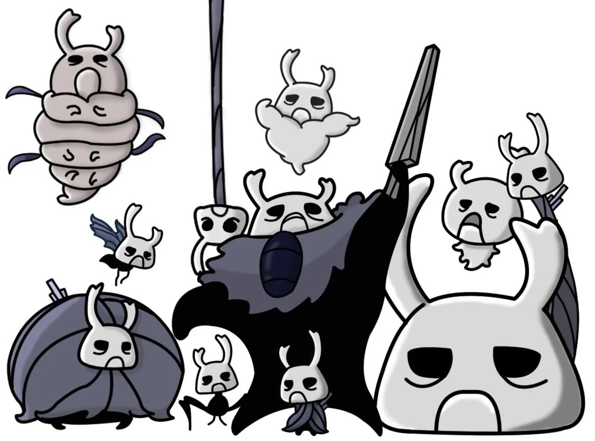
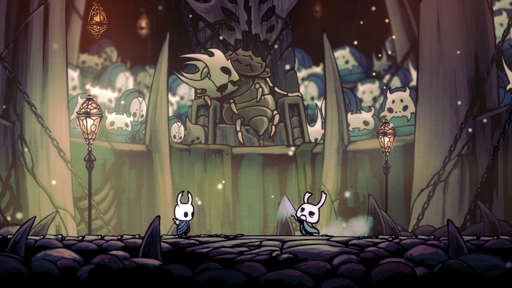

¡Zote el Todopoderoso!

Zote el Todopoderoso es un personaje recurrente que se autoproclama un caballero de gran renombre. A pesar de su apariencia pequeña y su obvia falta de habilidad en combate, Zote posee un ego del tamaño de Hallownest y una confianza inquebrantable en su propia superioridad.
Empuña un arma de madera tallada llamada "Vida de terminal", la cual, según él, ha segado miles de vidas, aunque en realidad es incapaz de hacer daño incluso al bicho más débil del reino.

Los 57 Preceptos de Zote
Zote no solo es un guerrero, es un filósofo. En Bocasucia, si tienes la paciencia necesaria, te recitará sus 57 preceptos para una vida de gloria. Aquí algunos de los más "profundos":
- 📜 Precepto 1: Siempre gana tus batallas.
- 📜 Precepto 14: No respetes a nadie.
- 📜 Precepto 45: No respires agua.
- 📜 Precepto 57: Obedece todos los preceptos.
El Príncipe Gris Zote
Aunque en el mundo real Zote es inofensivo, su ego cobra vida en el Reino de los Sueños gracias a la imaginación de Bretta. Allí aparece como el Príncipe Gris Zote, una versión poderosa, musculosa y extremadamente peligrosa que representa cómo se ve él a sí mismo.
"Preparaos, gusanos. ¡Sentid el filo de madera de Vida de terminal!"

Un Encuentro Inevitable
A lo largo de tu viaje, tendrás múltiples oportunidades de salvarlo de situaciones ridículas. Si decides rescatarlo, te "recompensará" con insultos y lecciones de vida que nadie pidió, convirtiéndose en el alivio cómico (o el dolor de cabeza) más memorable de Hallownest.